01 / TEAM → TIMELINE
队伍进入排轴后，
技能不再是一张静态表。
最多四名干员构成出战队列。排轴画布按分组组织 A / B / E / Q 技能节点；每个节点都能继续承载 Buff、状态、敌方抗性、命中微调和伤害详情。
四人出战队列技能节点拖拽与分组批量 Buff 操作目标抗性 / Hit 微调
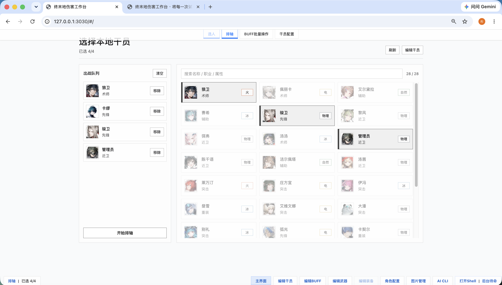
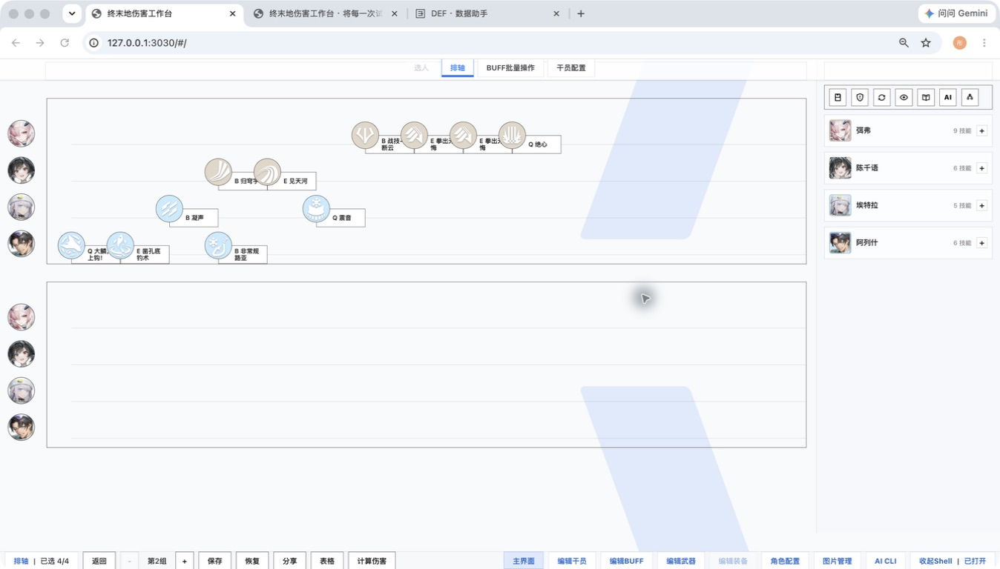
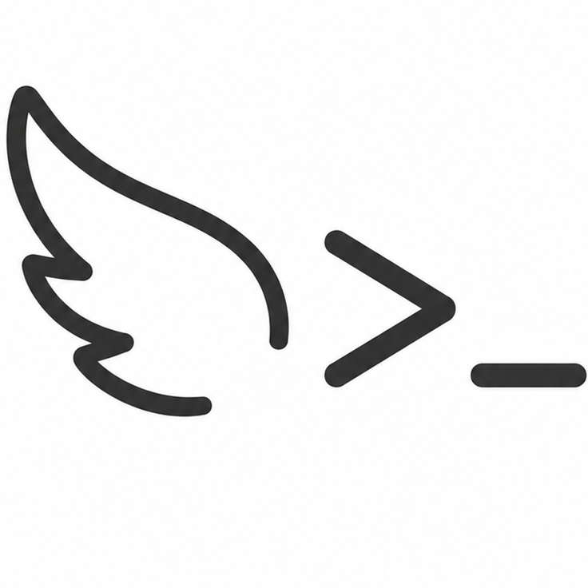
终末地伤害工作台 GitHub 源码 ↗INTERVIEW PROJECT / AI-ASSISTED DESKTOP SYSTEM
古法 Excel 太慢？AI 计算帮你狂吃流量。缺乏想象力？AI 穷举能出最逆天的游戏攻略。把一套阵容放进工作台，它会从攻略与本地资料里抓取线索，在伤害、Buff、命中与技能轴之间反复计算，再把值得看的候选方案留成可审查的节点。你不必相信一段玄学回答——每一次“能打”都能回到配装、计算和审批记录。
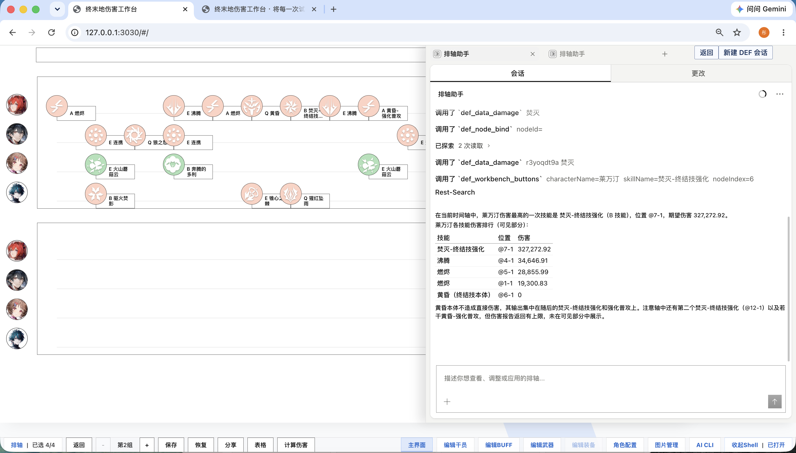
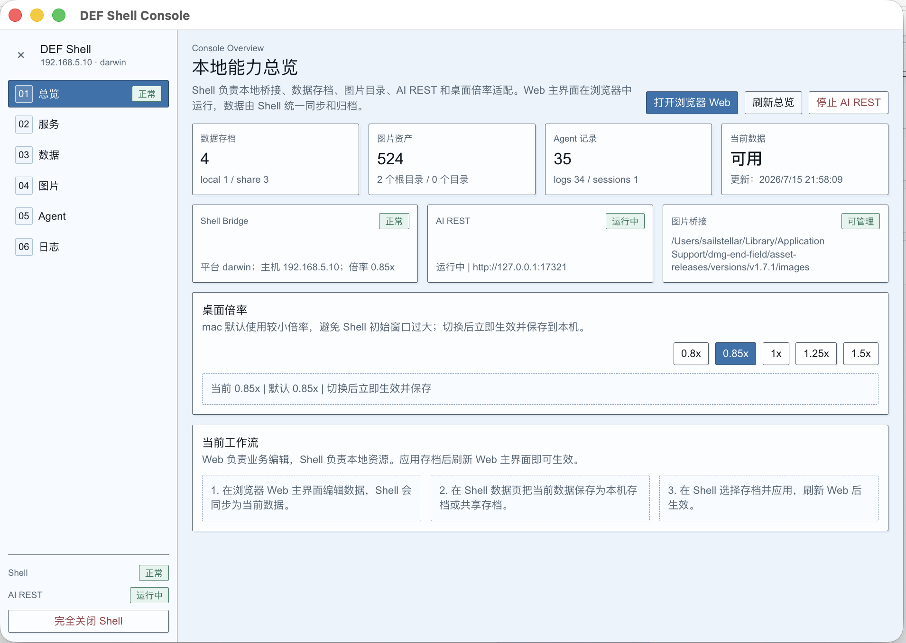
01 / TEAM → TIMELINE
最多四名干员构成出战队列。排轴画布按分组组织 A / B / E / Q 技能节点；每个节点都能继续承载 Buff、状态、敌方抗性、命中微调和伤害详情。


02 / TIMELINE → BUFF WORKBENCH
排轴上的节点并非只负责排布顺序：可按干员框选并批量增删 Buff，也可打开单个技能，查看生效条件、期望伤害、暴击 / 非暴击结果，以及每一个伤害乘区的计算依据。
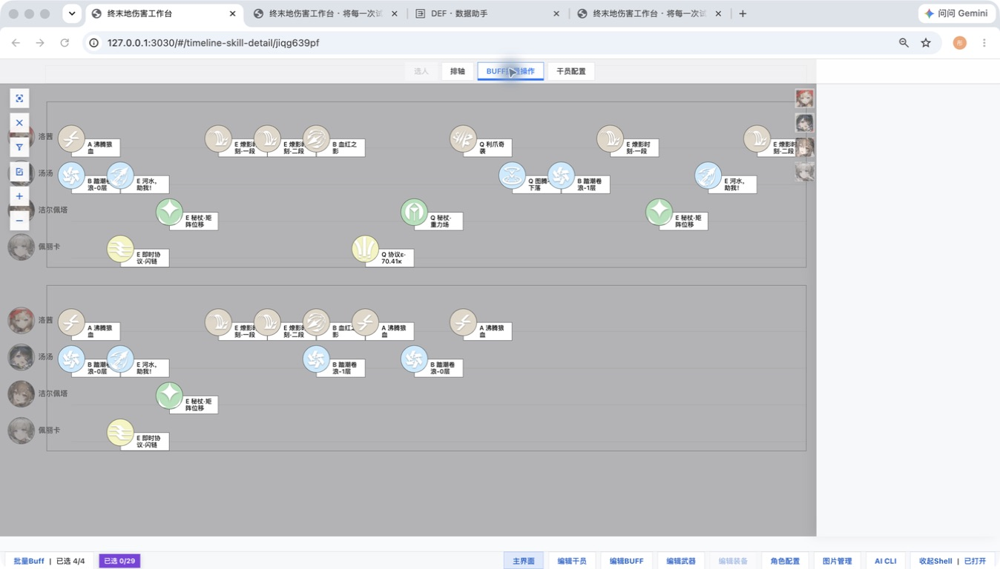
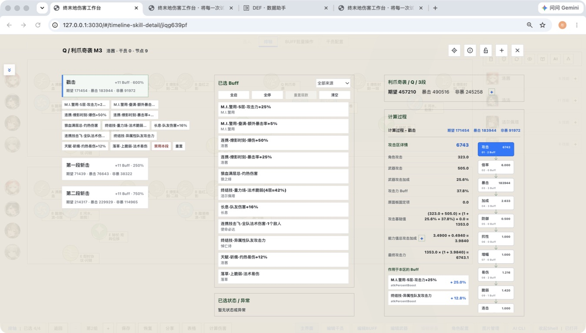
03 / CALCULATE → REPORT
这里切换到另一份当前保存的四人案例（洛茜、汤汤、洁尔佩塔、佩丽卡）：报告将配装、两组完整排轴、角色伤害占比与累计时序拆为三页并列展示，方便从配置一路核验到结果。
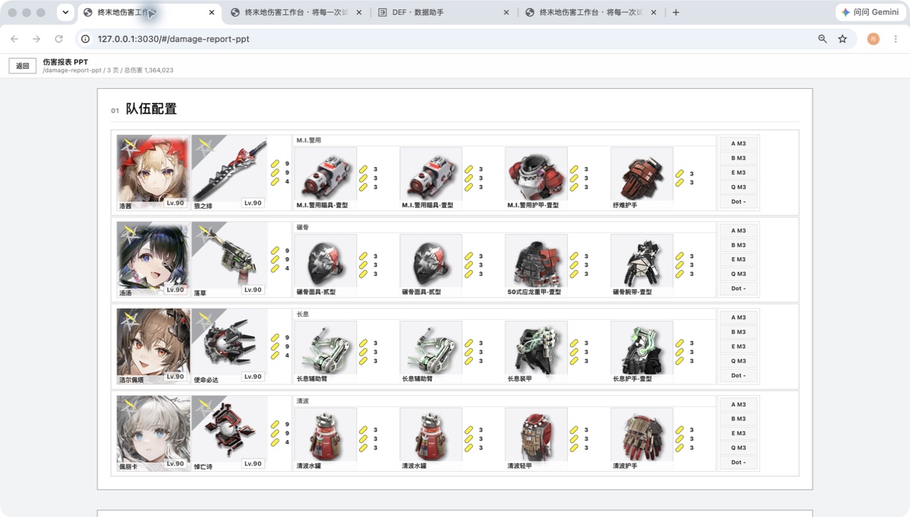
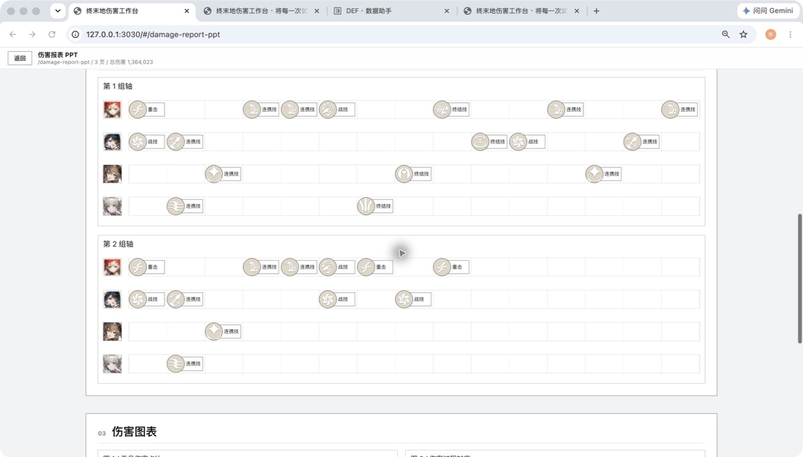
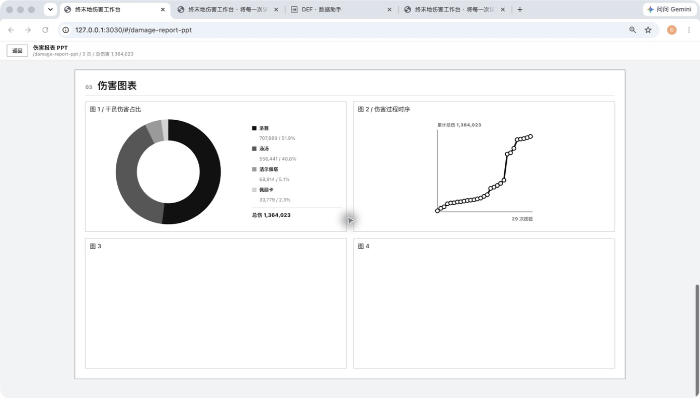
04 / PRESERVE → AI REVIEW
保存、恢复、分支与 AI 协作都以可见工作面呈现。AI 的修改先以提案和工作节点留下，再由人工查看差异、风险与校验证据，决定应用、checkout 或回退。
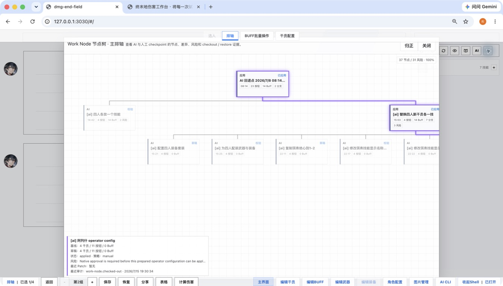
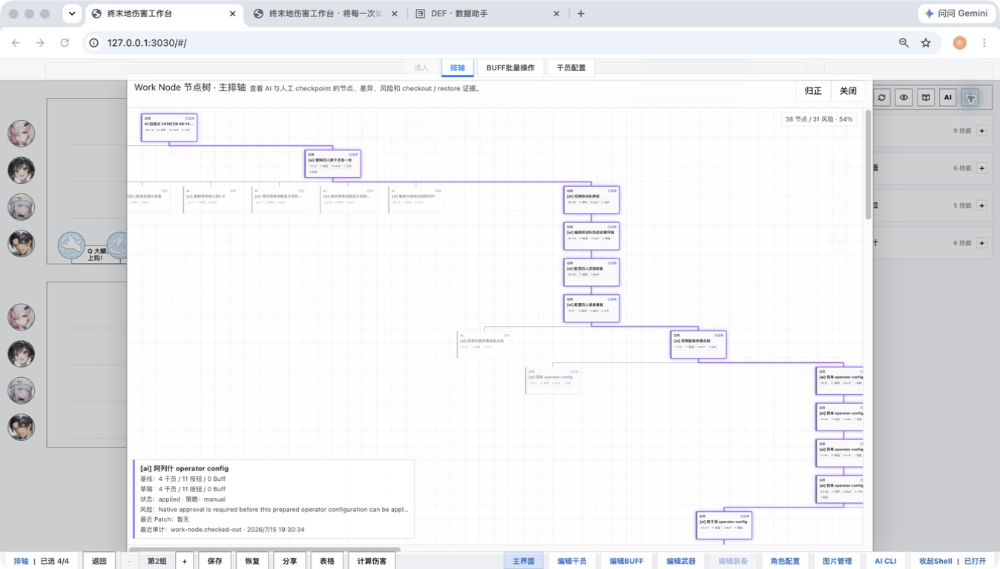
05 / LOCAL ASSET MAINTENANCE
工作台不只消费资料：干员、武器、装备和图片资源都有独立编辑与管理界面。它们可以新建、保护、整理、保存、导入与导出，并保持与方案文档分离的可维护边界。
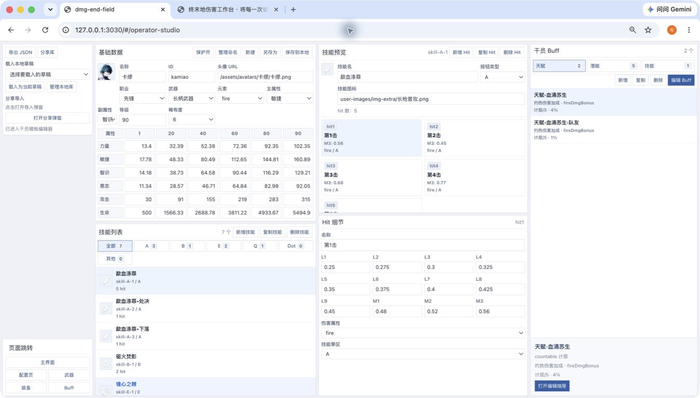
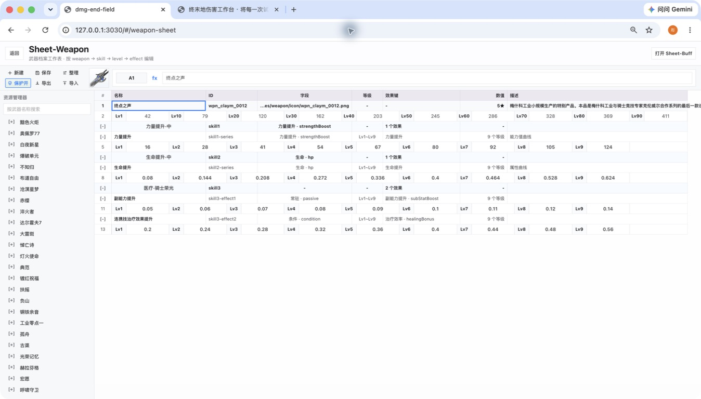
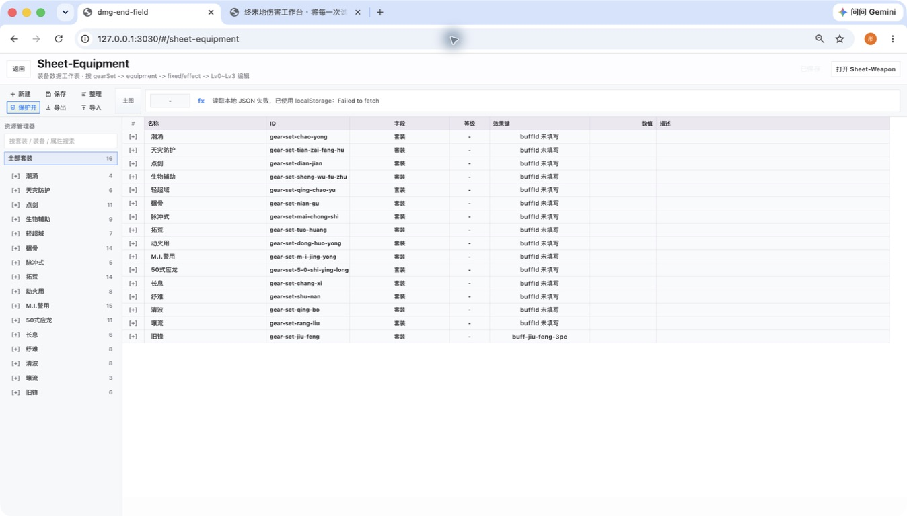
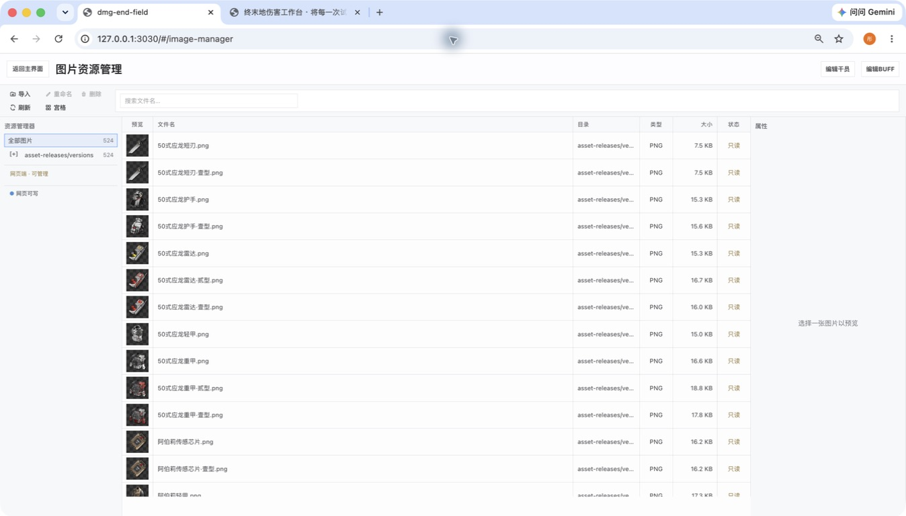
SYSTEM ARCHITECTURE / README-ALIGNED
它不是网页聊天框外接几个接口：正式方案与 AI 草稿分开保存，模型只能经过已定义的领域操作，运行时改动还要用真实会话回放验证。
文档内包含 Snapshot、Work Node、CheckoutRef 与 Audit Event；分享包导入前校验 schema、哈希和引用，再原子写入。
Typed Tools 决定 AI 当前允许做什么；Work Node 保存基线、工作副本、补丁与风险，让提案可检查、可应用、可丢弃。
DefHarnessSessionBindingV1，后续 turn 固定使用同一 hash。promotion 或 rollback 只影响之后的新 session。不是在线换人格TIMELINE DOCUMENT / 本机事实源
节点树不是 UI 装饰：它记录正式文档与 AI 子节点的引用关系，使保存、恢复、校验、审批与回退都可追溯。
GITHUB RELEASE / 资源更新链
图片资源的版本检查与下载走发布链路；它不等于排轴数据同步，也不替代 SQLite 中的正式方案。
不是云端排轴数据库。正式事实源在本机 SQLite，不依赖浏览器缓存或远程同步。
不是任意本机代理。Typed Tools 拒绝任意 Shell、文件访问、任务编排和未知目录写入。
不是一次演示即算验证。Harness 以版本化工件和真实会话场景验证运行时演进。
READY WHEN YOU ARE
一个非官方的个人工具与研究项目。用于资料整理、配装推演和开发实践。
前往 GitHub ↗